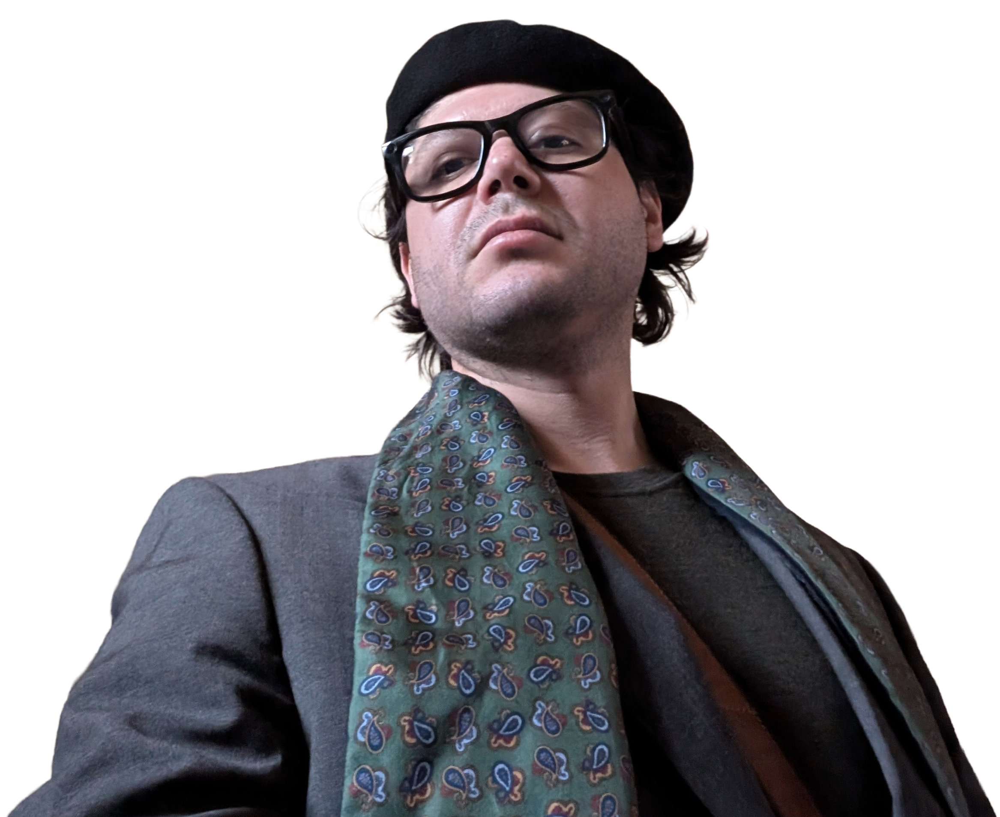

Art
Visual culture, curation, and atmosphere.
Art gives the work taste, sensitivity, and conceptual depth. It informs typography, framing, visual pacing, and the ability to create identity without visual noise.
For clients, collaborators, and employers who want premium digital presence with clear thinking behind it: refined aesthetics, strong structure, and practical value.

My practice is multidisciplinary on purpose. I care about what a project communicates, how it functions, and what kind of intelligence it projects before any conversation even begins.
The aim is credibility with atmosphere: distinctive enough to be remembered, structured enough to be trusted, and calm enough to feel premium.
Art gives the work taste, sensitivity, and conceptual depth. It informs typography, framing, visual pacing, and the ability to create identity without visual noise.
I design and build complete WordPress presences, from structure and visual direction to launch-ready setup. I also offer WordPress courses, plus backup and maintenance services for sites that need long-term care.
My background in business administration and economics helps me connect design decisions to positioning, clarity, and outcomes that make sense beyond the visual layer.
A multilingual visual system built as a living mosaic of proverbs, combining motion, rhythm, language, and composition into a clear authorial project.
Open projectA stripped-back writing space that fits the wider practice: direct, minimal, and quietly technical, using GitHub as the content backend.
Visit blogThe blog is part of the same practice, not a side note. It holds observations, process, references, and ideas in a minimal format that matches the overall tone of the site.
Available for selected collaborations, design work, and thoughtful opportunities.
hello@pablo-studio.com